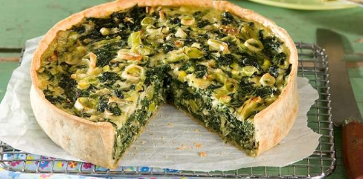

zuchini tart

In order to make this meal you need these ingredients:
- 1kg of Zuchini
- bread crums
- 2 eggs
- 100g butter
- 1 kg of onion
- 500g flour
- 3g salt
Now lets make our zuchini tart
- Pour the content of the eggs inside some bowl and mix them with 500g of flour and the butter
- knead the preparation until it does not stick on your hands (dough)
- cut into very small pieces the zuchinis and the onions
- cook the vegetables in the stove
- take a mold pan and stretch the dough so that the surface is completely covered
- put the vegetables inside the dough
- bake the tart for 30 minutes
Return to home page